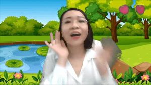
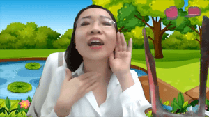
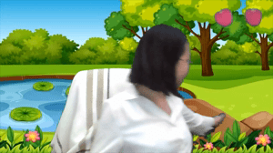
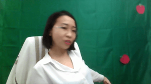
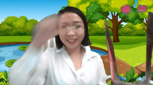
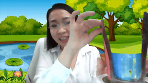
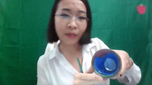

。Blog
<< 2020‧11‧11 |【Clinic】Dinosaur Game: /k/ and /g/ in Isolation
I developed a greenscreen activity for children with speech sound disorders to work on /k/ and /g/ in isolation. The treatment plan was developed in conjunction with my clinical partner, Keely Morrow, BA (Hons), MSc. Linguistics, who is a 2nd-year MSc. Speech-Language Pathology student at the University of Alberta.
The activity is about a little dinosaur wanting to "crunch" some apples, and a big dinosaur wanting to "gulp" some water.
The child will say the magic sounds: "k" to make the apple fall on the ground, and "g" to fill in the water cup. We used both hands to the back of mouth to gesture /k/, and one hand down to the neck ("motor" or "voicebox") to gesture /g/.
 
The child can choose which fruit to get for the little dinosaur. Once they make the "k" sound, the fruit will move downwards in the background. This is because a green string is pulled on the greenscreen.
 
The child can choose which cup to fill in for the big dinosaur. Once they make the "g" sound, the cup will be filled in with water or juice. This is because a piece of green paper is pulled out of the cup, which is innerly-lined with blue paper (the water).
 


The game also models words with /k/ and /g/, e.g. crunch, gulp, can, get, like, thank, good, etc.
Should you have any questions regarding this activity, please feel free to contact me.